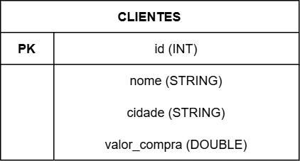

Contextualização
Sobre o Projeto
Este projeto foi desenvolvido para a disciplina de Engenharia de Dados do curso de Engenharia de Software (5ª fase), com o objetivo de explorar o uso do Apache Spark integrado ao Delta Lake e ao Apache Iceberg — dois dos principais formatos de tabela para arquitetura Data Lakehouse.
Cenário
Utilizamos uma tabela de clientes de uma loja fictícia como fonte de dados, demonstrando operações de manipulação de dados com transações ACID em um ambiente distribuído:
- INSERT: inserção dos dados iniciais
- UPDATE: atualização de cidade e valor de compra de um cliente
- DELETE: remoção de um cliente da tabela
- TIME TRAVEL / SNAPSHOTS: consulta de versões anteriores dos dados
Modelo ER

Ambiente
O ambiente foi containerizado com Docker, utilizando a imagem oficial jupyter/pyspark-notebook, que já inclui Apache Spark e JupyterLab configurados. Isso garante reprodutibilidade — qualquer pessoa com Docker instalado consegue rodar o projeto.
docker compose up -d
Após subir o container, o JupyterLab fica disponível em http://localhost:8888.
Tecnologias Utilizadas
| Tecnologia | Versão | Descrição |
|---|---|---|
| Apache Spark | 3.5.0 | Engine de processamento distribuído |
| Delta Lake | 3.2.0 | Formato de tabela com ACID para Data Lake |
| Apache Iceberg | 1.5.0 | Formato de tabela open source para Data Lake |
| PySpark | 3.5.0 | API Python para Apache Spark |
| JupyterLab | 4.5.7 | Ambiente interativo de notebooks |
| Docker | 29.4.1 | Containerização do ambiente |
| MkDocs Material | - | Documentação estática |
Arquitetura
O projeto segue a arquitetura Data Lakehouse, que combina as vantagens do Data Warehouse (transações ACID, esquema definido) com as do Data Lake (armazenamento barato, flexibilidade de formatos).
Os formatos Delta Lake e Apache Iceberg são os principais projetos open source que viabilizam essa arquitetura, adicionando transações ACID a arquivos Parquet em um Data Lake.
Estrutura do Projeto
spark-delta-iceberg/
├── notebooks/
│ ├── delta_lake.ipynb # Notebook com demonstração do Delta Lake
│ └── iceberg.ipynb # Notebook com demonstração do Apache Iceberg
├── docs/ # Documentação MkDocs
├── data/ # Dados gerados pelos notebooks
├── docker-compose.yml # Configuração do ambiente Docker
├── mkdocs.yml # Configuração da documentação
└── README.md # Instruções de reprodução do ambiente